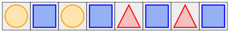
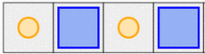
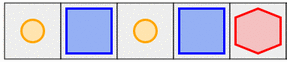
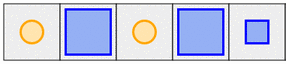
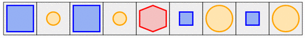
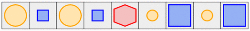
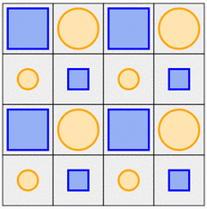
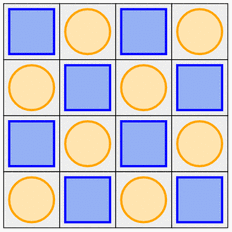
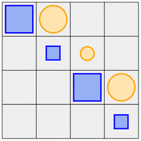

Rearrange the objects so that two identical objects are NEVER side by side.
Rearrange the objects so that:
Rearrange the objects in the grid so that:
Remarque : les données de la correction ne correspondent pas forcément à celles de votre sujet.
Pour résoudre cette version, il suffit de placer un carré bleu dans une case sur deux.

Au début, on ne sait pas forcément par quoi commencer. Ce qui est sûr, c'est que ça ne sert à rien de placer le grand hexagone dans les 4 premières cases. En effet, s'il y avait une solution avec l'hexagone dans la première moitié, alors il y aurait une solution symétrique avec l'hexagone dans la seconde moitié (en prenant les formes de droite à gauche à la place de les prendre de gauche à droite).
Essayons donc, par exemple, de commencer par un petit rond, et de voir ce qu'il se passe. Si l'on ne met pas l'hexagone dans la première moitié, alors après le petit rond on est obligé de mettre un grand carré, puis à nouveau un petit rond, puis un grand carré.

On est alors coincé, car aucune des formes restantes ne permet de continuer :
 (deux grands de suites)
(deux grands de suites)
 (deux carrés de suites).
Si on avait commencé par un petit carré, on aurait été coincé de la même manière.
Du coup, on en conclut qu'il faut forcément commencer par une grande forme. En commençant par un grand carré, on continue avec un petit rond, puis un grand carré, puis un petit rond, et là on est obligé de mettre l'hexagone au milieu. Ensuite, il n'y a pas le choix pour continuer : on est obligé de mettre un petit rond, puis un grand carré, puis un petit rond, puis un grand carré.

Si au contraire on avait commencé par un grand cercle, on aurait alors obtenu la situation symétrique :

Voici une solution (il y a d'autres solutions, symétriques de celle-ci) :

Pour comprendre comment aboutir à cette solution, imaginons pour commencer qu'il n'y ait que des grandes formes, et qu'on n'ait que la première règle, qui dit que deux ronds ou deux carrés ne se touchent jamais par un côté. Si l'on commence par un carré dans le coin en haut à gauche, alors on est obligé de compléter la première ligne en alternant des ronds et des carrés. Sur la deuxième ligne, il faut alors commencer par un rond, puis de nouveau alterner entre carrés et ronds. Au final, on obtiendrait :

Reprenons maintenant des petites formes, mais en restant sur le principe qu'il faut forcément alterner les ronds et les carrés pour continuer à respecter la première règle. La seconde règle dit que deux petits objets ou deux gros objets ne doivent jamais se toucher par un coin. Il faut donc, sur chaque diagonale, alterner entre des petites formes et des grandes formes. Donc, si l'on commence sur la première ligne avec des grandes formes, il faut placer des petites formes sur la deuxième ligne, puis des grandes sur la troisième, etc... comme illustré ci-dessous.

Lorsqu'on complète toutes les diagonales en alternant petites et grandes formes, tout en conservant le fait que sur chaque ligne et sur chaque colonne on alterne entre carrés et ronds, on obtient au final la solution présentée plus haut.
Lorsqu'on résoud ce sujet à la main, on peut étudier attentivement les contraintes et essayer d'en déduire des idées de comment construire la solution. Mais comment un programme (dénué d'intelligence) pourrait-il s'y prendre pour trouver la solution ?
Une manière naïve consiste à essayer toutes les rangements (permutations) possibles des formes dans les différentes cases, et ensuite tester pour chaque configuration obtenue si elle vérifie les contraintes. C'est ce qu'on appelle l'approche brute-force.
Cette approche brute-force fonctionne très bien sur la version facile et la version moyenne du sujet, et, moyen un petit temps d'attente, permettrait également tout juste de résoudre la version difficile. En revanche, s'il y avait plus de pièces à ranger, cette méthode se révèlerait totalement inefficace, et ne permettrait pas de trouver la solution en un temps raisonnable.
Une meilleure manière de s'y prendre consiste à écrire un programme qui va poser les pièces une par une (en essayant les différentes possibilités), et en s'arrêtant dès qu'une des contraintes n'est plus satisfaite. Dans ce cas, le programme revient en arrière et considère d'autres choix. Cette méthode appellée backtracking, est utilisée dans de nombreux programmes informatiques.